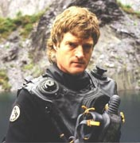
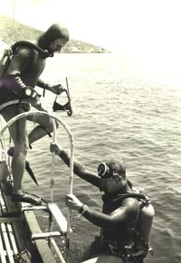
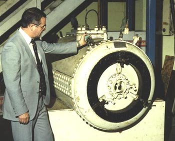

Edited Script 31/7/00
PART 2: 1942 - Possible Futures
ROB PALMER - INTRODUCTION

A love for adventure, the thirst for seeking out answers from the unknown and that elusive quest for discovering a more perfect beauty than seen before. These have lured hungry minds throughout the centuries - forever yearning as they probe and extend the frontiers of the ‘known’ world.
Mermaids: imaginary physical mammals or the living spirits of the seas? The diver holds a high place amongst those who carry the torch of the pioneering spirit. On the surface it may be the desire of riches or the pursuit of a trade which draws a diver down. Once underwater it is the seeking out of the Unknown and the Undiscovered, both of this world and him or herself, which calls with the loudest voice.
The story of diving is as old as the seas themselves. As you sit back we aim to shine a light on some of the watershed achievements which have contributed to the development of newer and ever more efficient ways for human beings to move through water of continually increasing depths.
PART ONE TRAILER
From Part One...
20,000 Leagues Under the Sea John Williamson 1916
Development of Standard Dress by the Deanes and Augustus Siebe
‘Ancestor of the aqualung’ Commandant Yves Le Prieur 1935
Pioneer of modern diving mobility Hans Hass 1942
REG VALLINTINE - WARTIME
During the war frogmen were using autonomous oxygen apparatus, the descendant of Fleuss’ equipment. Very successfully putting limpet mines onto ships; winning Victoria Crosses. The equipment was also used by Charioteers
The Chariot ROYAL NAVAL FILM UNIT, 1942
THE IMPERIAL WAR MUSEUM
who sat astride torpedoes and these exploits are well documented.
REG VALLINTINE - JACQUES COUSTEAU
We then come to the final stage where a French navy officer called Cousteau met an engineer called Gagnan, produced the first fully automatic demand valve, linked to a high pressure cylinder, produced the aqualung or scuba as we know it today and opened the sport to millions.
During 1936 a French Navy Gunner, Jacques Cousteau waded into the Mediterranean Sea, near Toulon armed with a pair of Fernez goggles,
CAPITAINE JACQUES-YVES COUSTEAU (1910-1997)
intent on perfecting his crawl swimming style. Two years later he found himself teaming up with Philippe Tailliez and Frédéric Dumas for some early snorkel diving experience.
Undersea World CAPITAINE COUSTEAU, 1936
After some abortive, nearly fatal, experiments with self-designed oxygen rebreathing apparatus in the late 1930s, Cousteau met Émile Gagnan in Paris during December of 1942.
EMILE GAGNAN Gazogène
Gagnan had developed a demand valve for feeding cooking gas automatically into converted car engines.
CINÉMATHÈQUE MONDIALE
DE LA MER
ET DE L’EXPLORATION OF TOULON
A few weeks later, fired by Cousteau’s suggestions, the first two stage diving regulator was ready for testing. It worked when swimming horizontally, but failed to give air when the diver had his feet above his head and poured air into the water when the diver’s head was uppermost.
Undersea World CAPITAINE COUSTEAU, 1943
The solution was soon realised: the exhaust valve had to be placed as close to the intake as possible so that pressure variations would not upset the air flow.
Initial experiments were carried out examining and exploring wrecks, often with Cousteau behind the camera and Dumas acting as the subject. The Dalton was a 5,000 ton British steamer on charter to a Greek navigation company. After departing Marseille on Christmas night 1928, with a cargo of lead, it headed for the Planier Island light and promptly struck the shore and foundered, sinking to a depth of 50' at the bow end. The lighthouse keepers managed to rescue all hands, who they reputedly found to be drunk - everyone from cabin boy to skipper!
Another wreck they explored was the deep sea tug, Polyphème, scuttled off Hyères at the gate of the antisubmarine nets which she had been tending on 27th November 1942.
The Cousteau-Gagnan valve supplies air at the same pressure as the water that the diver is swimming through. It works in a two stage operation. The first stage is a pressure reducer, to seven atmospheres above ambient.

It is in contact with the surroundings via a diaphragm. A spring opens the valve when the air pressure drops or depth increases. Air pressure closes the valve when the preset level is reached.When the diver takes a breath the pressure in the regulator drops, depressing the larger diaphragm and opening the second stage. Air then flows until the end of the inhalation when the pressure rises and closes it again.
The exhaust must be at the same level as the second stage, and so is carried back via a second hose.
Cousteau’s new apparatus allowed him and his team to examine sea creatures in their own element, following on from the work initiated by Hans Hass.
Through the successful marketing of the 1st automatic aqualung, or scuba diving apparatus, Cousteau became internationally known and his TV film series featuring his ship Calypso made him a household name.
Sharks, as Hans Hass had found, were not normally a problem, but one day in the open sea between two islands of the Cape Verde group, out of the grey haze appeared an 8 foot long light-grey shark, accompanied by its unshakable pilot fish. In spite of previous success in deflecting sharks, gesticulation, air bubbles and shouting all came to no avail. Cousteau finally rammed the camera against its nose and the film jammed.
Some time later the diving boat ended their ordeal by sailing overhead, but not before the sharks had circled relentlessly and driven a respectful fear into the divers...Scuba diver
REG VALLINTINE - SCUBA CLUBS
At this time hundreds of amateur diving clubs were formed in many countries. The Cave Diving Group formed in 1946; the British Sub-Aqua Club in 1953; the French Federation and other groups of clubs.
ROB PALMER - CAVE DIVING: HANS HASS
Menscen unter Haien (Men Amongst Sharks) HANS HASS, 1942
Early submarine cave diving was undertaken by Hans Hass in the Aegean Sea during 1942 using oxygen rebreathing apparatus.
Hans Hass speaking in person:
"The rock faces are heavily fragmented and as the fishermen maintain that a few sea lions
still live in some grottoes we were also driven to go there.
This led us deep into the rocks so that we had to complete our trip by torchlight. This work was somewhat fascinating for us. When one thinks of going out today into the wide world to discover new lands, it appears to be completely impossible to find somewhere man has not been already.
Man has advanced everywhere and unfortunately his traces can be seen all over. Therefore it is so wonderful that one land remains which man has not yet been able
to conquer - The Deep Sea."
ROB PALMER - CAVE DIVING: JACQUES COUSTEAU
Four years later Jacques Cousteau and Frédéric Dumas set out to conquer the inland cave: Fontaine de Vaucluse, near Avignon, using their new self-contained scuba diving apparatus.
A trickle of water normally flows from the spring which lies beneath a 600' limestone cliff. However, every March, for five weeks of the year, the trickle becomes a gushing torrent, almost independent of local rainfall. Cousteau and his companions hoped they might be able to learn the secret of its operation.
24-27th August 1946
At a depth of 200', some 400' into the sump, the two intrepid divers were struck by a narcotic rapture of the depths, feeling strangely heavy and anxious. Attached together by a 30' length of rope the two finally made it back to the surface with the help of Maurice Fargues, hauling up the main line. A dramatic escape from near death.
The next pair of divers suffered a similar fate before the culprit was found to be carbon monoxide exhaust fumes from their new diesel powered, free-piston air compressor. These had entered the air intake whilst filling the bottles. At the depth the team had been diving this was increased sixfold, enough to kill a man in only twenty minutes.
ROB PALMER - CAVE DIVING: GRAHAM BALCOMBE
Just a few months earlier, at Easter 1946 in South Wales, Graham Balcombe and Jack Sheppard tackled the Swansea Valley rising at Ffynnon Ddu. Out of this enterprise the British Cave Diving Group was born.
GRAHAM BALCOMBE
At the end of the war we returned from Harrogate to London and it was my hope to resume work at Wookey Hole.
GRAHAM BALCOMBE (1907-2000)
Founder - Cave Diving Group
So I contacted Jack Sheppard and said well we can get back into diving, but we think we ought to organise things a bit better than we have done in the past. So I sent out a circular to all those prominent cavers who might be interested and said, "We are going to form a loose association of people interested in diving and we think it would be a good idea if we had a meeting down in South Wales at Ffynnon Ddu". The ‘Ogof’ wasn’t known in those days, it was just the spring. We would dive in the spring and there was always the hope that we could get through and find a cave beyond.
Ffynnon Ddu Rising, Easter 1946
At the end of the weekend, having put down about 6 or 8 divers for the first time and laid the foundations of a group, united them in interest, the meeting closed. From then on the Cave Diving Group was operated or run as it was from my headquarters by the dint of midnight oil and a cheap old duplicator and typewriter. Bashing things out, trying to keep things together and making equipment in the odd moment that was available.
The other members started making equipment for themselves and working in their own areas. There was one in South Wales and another one in Somerset and generally the enthusiasm was beginning to seep in and spread around.
You hear nothing at all except the burble of the gas from your helmet blblblbl blblblbl blblblbl as the bubbles rise up. Otherwise it’s completely silent. You hear a click of a stone occasionally if you disturbed a rock and sent it rolling down a slope. A clink, very high pitched clink, but otherwise it’s dead, it’s a dead place.
It’s like a dream being down underwater.
ROB PALMER - CAVE DIVING: MODERN TECHNIQUES
Cave Diving requires a modified approach to suit the often murky and constricted nature of flooded subterranean tunnels. In the UK, side-mounted bottles give the most flexibility for tackling constricted underwater passages.
A line reel enables the diver to lay a thread which will guide him back out of the dark maze to safety at the end of his exploration. Powerful lamps help to illuminate the inky dark waters. A complete second set of diving apparatus, and the rule of returning once 1/3 of the carried air supply has been exhausted, helps to ensure the safe return of the diver.
 REG
VALLINTINE - COMMERCIAL & NAVY
REG
VALLINTINE - COMMERCIAL & NAVY
The aqualung was then taken up by scientists. It’s interesting that the little
Nudibranks or sea slugs were considered to be rare until the advent of the aqualung.
It was used by commercial divers and then taken up by the military. The navy
divers were ships’ divers or clearance divers, their experts using such apparatus
as the Sabre Set.
REG VALLINTINE - SCUBA DEVELOPMENT: JIMMY HODGES
Jimmy Hodges: a celebrated wartime frogman
Report from the Sea-Bed
Admiralty Photographic and Instrument Research Laboratories
who had been in X-craft during the Normandy landings prepares to film underwater in the Mediterranean during the early 1950s. The diving apparatus consists of twin tadpole cylinders linked to a Cousteau-Gagnan demand valve.
Crown Copyright 1949-50
Jimmy Hodges later took the first moving pictures of torpedoes being fired from a submarine.
Whilst participating in Hans Hass’ Xarifa expedition to the Galapagos Islands in Easter 1953, Jimmy Hodges drowned through an unfortunate accident. It is thought that he might have died of anoxia when his breathing bag was mistakenly not fully purged of ordinary air. This would have left nitrogen present in dangerous quantites. He was found lifeless on the bottom with his mouthpiece out.
REG VALLINTINE - SCUBA DEVELOPMENT: BUSTER CRABB
Another famous wartime frogman who had served with Jimmy Hodges
PORTSMOUTH 1956
met with a highly enigmatic ending.
Commander Lionel Crabb, RNVR
wartime diving hero, vanishes near the Russian ship
Commander Lionel ‘Buster’ Crabb booked in at the Sallyport hotel in Portsmouth on 17th April 1956 with a Mr. Smith.
Meanwhile, at Portsmouth Harbour...
A Russian cruiser with two attendant destroyers was present in the harbour having brought the Russian leaders,
The Russian Heads of State arrive for a 10 day visit
Bulganin and Kruschev to Britain. Two days later Crabb disappeared and a Royal Navy Captain announced that this had happened during underwater tests.
The Portsmouth Police removed four relevant pages of the hotel register alerting journalists and eventually leading to questions being asked in the House of Commons. The Prime Minister told the House that, "It would not be in the public interest to discuss the circumstances."
Whether espionage or accident, subsequent events have merely conspired to exacerbate the mystery...
He is never seen again
REG VALLINTINE - SCUBA DEVELOPMENT: BSAC AT SALCOMBE
During the mid 1950s clubs like the London Branch of the British Sub Aqua Club were established using the imported Cousteau Aqualung.
London Branch BSAC Mike Wilson, 1955
Expeditions were organised to the sea at places such as Salcombe and Durdle Daw near Swanage. The activity involved lots of lifting, carrying and climbing.
At that time the available thermal protection for sea diving was relatively inadequate. The safety rules were in the process of being established and modern innovations such as the compressed air life jackets were not available. The dives often took place in weedy bays which gave easier access to the water.
Diving officer was the concept of the stand-by diver from helmet diving times. Some divers used primitive dry suits which gave you wheals where the air was squeezed inside when you came out. Others had suits that were vastly inadequate for the freezing waters they were going into. It was a new world explored by amateurs.
REG VALLINTINE - SCUBA DEVELOPMENT: GIGLIO, MEDITERRANEAN
Holidays in the early 1960s
Giglio Mike Busuttili, 1961
took British divers to the Mediterranean and to the Italian Island of Giglio off Tuscany. This island with some 2,000 inhabitants acted as their base.
The uninhabited Island of Giannutri nearby had the remains of a Roman villa which had belonged to a cousin of Nero.
Out to dive off rocky shores in incredibly clear water. Diving took place from an ex-ship’s lifeboat down to depths in the region of 50m. In those days less was known of the dangers of decompression sickness and nitrogen narcosis. Here experienced divers gained their first taste of Mediterranean diving.
Swimming down the anchor line to deep sea bottoms below. The rewards were great on the sand bottoms. These amphoras from 300AD were two handled storage jars, like elegant jerry cans, and formed the largest remains of the ancient wrecks. They were used for transporting wine, oil, water or grain...
REG VALLINTINE - SCUBA DEVELOPMENT: MODERN EQUIPMENT
The divers here are enjoying the Mediterranean climate and spectacular underwater scenery off the coast of Sardinia. Present day scuba equipment includes efficient dry or wetsuits and flotation jackets with which the divers can control their buoyancy. The support this offers both underwater and on the surface while waiting pick-up is a great safety improvement.
To avoid the twin hose arrangement modern demand valves separate the first and second stages, connecting them with a flexible medium pressure hose.
The first stage adjusts the tank pressure of up to 300 bars to an intermediate pressure of 8-10 bars above the surrounding water pressure. In the second stage a diaphragm operated valve supplies air as the diver inhales. The exhaust is at the same level to avoid a pressure difference, which would result in ‘stiff’ breathing or a free-flow.
Sophisticated engineering ensures easy breathing at all flow rates and a fail-safe mode if the valve sticks.
Whilst modern understanding of decompression principles and the use of mixed gasses enables safe diving to considerable depths, this hard won knowledge was first grasped many years ago in the Siebe Gorman test laboratories. Nick Baker recounts the sacrifices which heralded the new era in diving.
NICK BAKER - MIXED GASES & GOATS
From very early on it was recognised that the way forward for deep diving was through the use of mixed gas, particularly mixtures of helium and oxygen. Unfortunately for the British, supplies of helium were limited. The only source was natural gas wells in the United States and the Americans were reluctant to export. Therefore the British were forced to push air diving to its absolute limit and by the use of the Davis Submersible Decompression Chamber or D.S.D.C., manufactured by Siebe Gorman & Company, they pushed air diving to 350 feet, its absolute limit.
This tank was used during the 1920s in experiments at Siebe Gorman & Company into mixed gas: helium and oxygen. Although helium was unobtainable in the UK during that period Sir Robert Davis managed to secure a supply which was left over from the 1st World War. He used this helium in conjunction with oxygen to carry out a number of experiments on goats and indeed this is known as the goat chamber.

During one of these experiments a goat had been compressed to a pressure of some 200 feet using heliox and was approaching the end of its decompression. During this time pure oxygen was fed into the chamber so that the goat’s final re-compression could be speeded up.The goat, probably feeling a little better now that its dive was coming to an end, was looking around for something to eat and it discovered two wires poking through the top of the chamber here. These would ordinarily have been attached to a light bulb. There was no bulb fixed at the time and the wires had simply been taped together: they were also live. This was unknown to both the researchers and the goat. The goat nuzzled at the wires, and began to chew them, and made an electrical contact.
Captain Damant was the first to notice that something was wrong. He observed a flash through the observation port in the chamber at its far end. He, probably the most practical person in the room, suggested that everyone should take cover. Two eminent physiologists, the chairman of Siebe Gorman and Captain Damant cowered under the table. Captain Damant later confided in his journal that he fully expected the chamber to explode and shrapnelise.
However, fortunately for everyone except the goat perhaps, the rubber seal around the door of the chamber burnt away and a sheet of flame and the smell of roast goat shot out into the room. Sometime later, when the chamber had cooled enough for the door to be fully opened, all that could be seen of the goat was a carbonised shell with its teeth still firmly clamped onto the electric wires. And I think as divers we have to remember the debt that we owe to those goats that have helped in physiological research into decompression.
ROB PALMER - SIEBE GORMAN HISTORY
From their earliest days at 5 Denmark Street, London, now the location of a music shop, Siebe Gorman moved their operation to the Neptune Works at Boniface Street in 1876.
Blacksmith’s Shop
Output trebbled when the company was based at this new location.
Gunmetal Casting
In 1894 Robert Davis became general manager, at the age of 24,
Pump Assembly Shop
later becoming managing director when William Gorman died in 1904.
SIR ROBERT H. DAVIS (1870-1965)
He would hold this position until 1960 - 5 years before his own death.
At 2.05am on 11th May, 1941 a Luftwaffe incendiary bomb ended operations at Lambeth. For a year, preparations had been in progress for a move to Chessington, and the gutting by fire served to speed up the transfer.
Manufacturing was quickly resumed and output peaked in 1950, with the Standard Diver Dress remaining in full scale production until 1955.
Barry Stephens became managing director in 1960 and the company went into the aqualung business, along with continuing chamber production and some bell diving systems.
Siebe Gorman moved to Cwmbran in 1975 where they now [1992], in completion of a full circle, concentrate on firefighting breathing equipment.
Unlike the bulky standard diver technology, a highly compact, current product [1992] serves as an escape set from capsized helicopters, for military or civilian use.
ERIC WALKER - LAST STANDARD DIVER
Last Professional Standard Dress
Diver in Portsmouth Naval Dockyard
I was a shipwright in the dockyard and my workmate retired and I decided to go in for diving. I had been interested before, watching the other divers and then that’s when I decided to go to Scotland for three months training at Rosyth Dockyard. The first dive that we had when we came back was undocking ships and naval warships and that type of work and surveys and all sorts of things.
 If
you had two to three feet visibility you was quite good. Because basically when
you’re working underwater on ship’s propellors or anything like that you only
need about two foot which is exactly the same as you sitting at a desk looking
down on a bit of paper. It’s as much as you want to see, boy. And because the
water magnifies the object you can see quite well.
If
you had two to three feet visibility you was quite good. Because basically when
you’re working underwater on ship’s propellors or anything like that you only
need about two foot which is exactly the same as you sitting at a desk looking
down on a bit of paper. It’s as much as you want to see, boy. And because the
water magnifies the object you can see quite well.
I was the last one to use standard diving in the Portsmouth Dockyard in an actual job. Well we have an in-house magazine called the Trident and they called it ‘End of an Era’ with an article on it and two or three photographs. When the specifications was got out the first time it was India Rubber and things like that. Well they don’t make it anymore, so they couldn’t build any/make any new equipment to the specifications and it would have cost too much to renew the specifications to modern materials.
It’s like anytime when you go underwater: it’s part of a job. Never, never took it to be like a hobby or anything like that: just a straight job.
JOHN BEVAN - HDS BACKGROUND
The inspiration for the formation of the Historical Diving Society was the end of the use of standard diving techniques in Portsmouth Naval Dockyard. As a result the Historical Diving Society was set up in 1990, by some 30 enthusiasts, to study, preserve and promote our diving heritage.
Since then the membership has grown steadily and now includes individuals and organisations from all over the world. The Society now produces a regular newsletter and arranges special conferences, visits and exhibitions.
JOHN BEVAN - HDS STONEY COVE RALLY
One of the most popular events in the Society’s calendar is the annual historical diving rally: the first of which was held at Stoney Cove in September 1991.
Seeing these enthusiasts enjoying their unusual pursuit, you may ask the question: "Why do they do it?"
Firstly, I think it is because they feel its important that we should conserve our diving heritage which is already rapidly disappearing from sight and memory.
And, second, the sheer enjoyment of the unique and fascinating experience of diving in the equipment. Through this activity we can better appreciate the problems faced by our diving forebears and how they were able to overcome them.
HARVEY PORRETT
"The divers are there to guide your feet down the steps." ("Yep"). "You go down to the bottom of the ladder. We will then tell you through the comm set how far out you can go and you can literally walk an arc on that length of hose. Alright?" ("Yep").
"Can you tell him to clear his ears, swallowing. Clear your ears by swallowing, otherwise it’s going to hurt. Right can somebody give him a hand over the side. That’s it mate. This is the hard bit. Don’t tell him this is the hard bit, climbing. No, up, up."
JOHN BEVAN
These are the sort of people who enjoy meeting technical challenges and working as part of a close-knit team.
DIVER & TEAM
("Hello Chris!") "Bloody hat fell over me eye." ("You alright son?") "Couldn’t see anything me hat went over me eye."
JOHN BEVAN - HDS WEYMOUTH RALLY
This year the Historical Diving Society is planning on holding a very special rally at Weymouth in Dorset.
1992
This event will represent the largest gathering of historical diving equipment ever. We hope therefore that this event will encourage divers to refurbish ancient diving equipment and maintain it in full working condition.
NICK BAKER
We had to spend some time constructing special supports for the ladders
Rally Co-ordinator
and also we had to build some divers benches because obviously the equipment’s very heavy and it’s important to have the correct size of bench for these heavy divers to sit on while they’re being dressed and getting undressed.
DIVER & HARVEY PORRETT
("Hello.") "No, give it an ‘over’ afterwards: these are comm sets. Pam can you hear, over." ("Yes.") "Right, Mary had a little lamb." ("Yes.") "Yes I can hear you Pam. Thank you dear." ("Hello.") "Don’t forget the over at the end of the chat." ("Over.")
NICK BAKER
The main problem with organising an event like this is that the people involved in it are individuals. They’re quite capable of organising themselves and so the problem is to gather a group of individuals who can all quite happily do their own thing into one place and actually get them to do things as you want them to.
DIVER
It feels quite heavy here on the chest and that. ("Yes.") It’s quite restricting and obviously the feet are really heavy, but that’s nothing yet because the weights haven’t gone on the front and back yet, so that’s when the fun and games start! I’ll probably need some help to get to the ladder, but should be okay in the water: that’s the main thing.
HARVEY PORRETT
The water’s quite opaque this time of the year anyway. We had some visibility to the cover divers to the end of the ladder, which was at around 10 or 12 feet. When the divers dropped off the ladder, down into the harbour mud, it was black. It’s all down then to correcting your buoyancy with the valve on the helmet, that’s your sole control, and you float yourself out the mud and hope to do the moonwalk across the bottom.
DIVER
It’s very silty down there and it’s very difficult to walk around. The visibility is about a metre if one is lucky. It’s quite good fun, it’s very good fun.
DIVER
Dropped off the bottom of the ladder, there’s about four or five foot drop. The trouble is it’s so muddy down there I think I went into the ground about a foot and then you’ve got to get these boots out, you know?
It’s good fun. It’s good fun!
DIVER
There’s a radio box up here which runs down an armour-plated cable to the back of the hat and there’s a two way transducer in the helmet. All I’ve got to do is talk and I can receive. I think it’s important to have communications, otherwise one has to rely on rope signals and they can get misinterpreted, misinterpreted.
NICK BAKER
We’ve actually managed to get about seven, I think eight working sets here today, and obviously it’s quite an achievement to have this sort of apparatus in working condition in such numbers in one place at one time.
JOHN BEVAN
Various members have brought along their personal collections of old diving equipment for display and in some cases actual use in the water. The main items are diving dresses up to 20 years old, helmets (some as much as 70 years old) and pumps, produced by various manufacturers in Britain and America.
Ancillary equipment includes knives, torches, lights, boots and a collection of more recent demand valves as used by scuba divers.
This particular meeting has been hosted by the Weymouth Deep Sea Adventure Centre, founded by Brian Cooper.
BRIAN COOPER - DEEP SEA ADVENTURE CENTRES
The idea came from my work in the diving industry and the fact
Professional Diver
that the public, I know, are fascinated by underwater discovery, shipwrecks and techniques used to recover oil and things like that from the sea bed. It starts in the 17th century and as you progress through the floors you eventually reach the ground floor where we’re amongst 20th century equipment like this ROV, remotely operated vehicle, called ‘High Sub’.
ERIC WALKER - HDS WEYMOUTH RALLY
This morning I’ve been helping out in the Dive Centre putting divers in the tank and this afternoon I’m going to get dressed up and jump off the cassoon and do me party pieces like I did last year.
IAIN MIDDLEBROOK - SUNKEN AIRCRAFT & DCBA
c.1964
This piece of equipment is called the DCBA or Damage Control Breathing Apparatus. The idea is it’s a shallow water, up to 50 metres, rapid intervention system, being able to dive via a diving umbilical and also having the ability of two cylinders which are used for bale out.
HSM Engineering Technology
Each cylinder is inter-connected through a first stage reducer, it then goes into a second stage reduction regulator and from there down the breathing tube into the diver’s lungs. And on the exhalation side it is balanced with a diaphragm in the middle of the second stage valve; out to ambient.
The advantages are: with a full face mask that you have the ability to communicate with another diver without having to have a communications system. The bite mouthpiece can be merely spat out and you can yell at the diver.
It’s a fairly lightweight system as you can see: it enables the rapid intervention of the diver to be able to put the system on, by himself, without any form of help. At the bottom you can see there’s the valve for the on/off control and there’s also the pull, which is pulled for ‘heard to equalise’. On pulling the pin pull, half of the air in the full cylinder is put into the other half-filled cylinder and you have half the duration in your diving cylinder. Once you’ve equalised twice, it’s time to surface.
FILM NARRATOR - REBREATHER STORY: JOHN PENNEKAMP REEF
Occasionally an octopus is found in a small recess in a reef.
1963
Their tentacles armed with suction cups are mainly used to help them attach their prey.
ROB PALMER
In contrast to scuba diving apparatus, the closed circuit oxygen rebreather provides a less wasteful means of self-contained movement underwater. This particular set was produced by the Divers’ Equipment Supply Company, based in Milwaukee, Wisconsin, USA during the 1940s.
In its simplest form a rebreather consists of an oxygen supply with an adjustable flow, a carbon dioxide absorbing canister containing an alkali such as soda lime and a reservoir or counter lung.
The diver breathes back and forth to the counter lung, each breath passing through the absorbent, which removes the carbon dioxide. Fresh oxygen replenishes the lost volume. The system needs pure oxygen, and is thus restricted to 10 metres. However little gas is wasted and a long duration may be achieved.
This type of apparatus was manufactured in Germany by Draeger, in Britain by Siebe Gorman, in Italy by Cressi-sub and by others in the USA during the war years of the 1940s.
ROB PALMER - REBREATHER STORY: HANS HASS
1942
Apart from this military use, sports and scientific divers, such as Hans Hass, took up the apparatus. In addition, early British cave divers used the equipment at sites such as Wookey Hole. However, there were problems.
In the trade such equipment came to be known, rather unaffectionately, as ‘One breath from death’. The two advantages of the closed circuit rebreather system are that no bubbles are produced and a greater underwater endurance may be achieved. However, the disadvantages can be severe:-
Menschen unter Haien (Men Amongst Sharks) HANS HASS, 1942
If a diver should proceed deeper than the current recommended limit of 6m, then a pressure will soon be reached at which the oxygen, vital for supporting biological life, becomes an absolute poison. Once the limit has been exceeded a fit and subsequent drowning are the likely consequences. Hans Hass demonstrates this problem, from which he was fortunately able to survive.
ROB PALMER - REBREATHER STORY: JOHN PENNEKAMP REEF
There is also the danger of producing a caustic soda mouthwash once saltwater mixed with the soda lime. This substance is generally preferred for cleaning the bath, rather than teeth and lungs!
Finally there is a need to purge unwanted nitrogen from the system. Air contains 20% oxygen and 80% nitrogen, all of which must be replaced in the breathing bag and lungs by oxygen for the apparatus to work safely. The system is purged of nitrogen by taking the contents of the breathing bag in through the mouth and out through the nose, three times. Failure to carry out this operation properly can result in anoxia and death.
ROB PALMER - MILITARY REBREATHER: CDBA
c.1975
In order to extend the depth capability of this type of equipment a semi-closed circuit mixed gas rebreather was developed. Here we see a postwar military clearance breathing apparatus, the C.D.B.A. The gas used is an elevated percentage of oxygen in air - nitrox - with mixes between: 60% oxygen, 40% nitrogen, for up to 20m depth, and 32½% oxygen, 67½% nitrogen, for depths of up to 50m.
The mixture is chosen for achieving a target depth, whilst reducing the nitrogen in the body and thereby decompression time.
This mechanical apparatus relies on a ‘flow orifice’ to regulate the rate of delivery of the mixed gas. The excess gas is dispersed from the breathing bag via a sort of spring loaded pepper pot. This disperses the bubbles into a fine mist, thus retaining some covert military advantage.
BRIAN COOPER - SATURATION DIVING
Professional Diver
The early days of the North Sea oil industry created a series of demands on the then burgeoning diving industry and it was necessary to develop a technique where you could dive regularly in deep water without hurting people, or hurting people as little as possible should I say. So what they came up with was a technique called saturation which was developed in the 60s and 70s. And basically you live in a chamber for 30 days or more sometimes at a time, under pressure. Transfer to a diving bell such as this one here and then that’s lowered, perhaps even through the deck of the ship, through the hull (a moonpool) into the deep water to a depth obviously of the job that you’re going to do.
The diver then leaves the bell, goes off to do the work, maybe working for some 8 hours at a time, comes back to the diving bell, the doors are shut, sealed at that pressure.
Statfjord on Magnus Field STEVE WELSH
The diving bell is then recovered, back through the moonpool, locked onto the chamber and the diver then enters the chamber and takes his rest period, where he can get food, a shower and go to sleep. There’s always at least two divers in the diving bell.
ROB PALMER
In order to extend the depth capability beyond 50m, which was required for early commercial diving, helium was introduced as the diluent gas in breathing mixtures. Apart from the Mickey Mouse voice, dealt with by a helium speech unscrambler, helium is absorbed into tissues more quickly and can require a longer decompression time.
A further problem is the rate at which heat is dissipated from the body through breathing denser gas mixtures at depth. As the body is unable to replace the lost heat just by working, hypothermia now becomes a problem.
BRIAN COOPER
Today, what’s actually happened is that they’ve extended the period people can spend on the sea bed, whereas obviously in the past it was much reduced; they’ve extended the depth that you can reach, significantly. There have been dives taken place in 2000 feet for experimental purposes and I think one working dive at that kind of depth, but at the frontier you really are in some danger in reality: similar to divers in the seventeeth and eighteenth century.
IAIN MIDDLEBROOK - CURRENT COMMERCIAL SET
HSM Engineering Technology
Bringing us up to date we have a selection of diving equipment in front of us that brings us quite nicely into the 90s. We have a straightforward diving helmet, a band mask and a diving bale-out set.
We’ll start off with the bale-out rig to begin with. It consists of a cylinder, first stage regulator and harness assembly. Incorporating in the harness assembly is the lead weight. In addition you have various lifting points and various anchorage points to be able to put tools or the umbilical harness itself.
COMMS & DIVER
("And clear also.") "Ready for off. Ready for water. All clear. Ready for bubbles. Right, moving myself apart."
IAIN MIDDLEBROOK
These two units are both in current service in the North Sea, both for air and mixed gas unit. The heliox is generally speaking used as a bellman’s hat, the superlite 17A or B is generally speaking used as the main diving hat.
To look at them in a bit more detail. The diving band mask consists of a hood and spider arrangement with a neoprene face seal at the front of the mask. Inside here you can clearly see the oral/nasal cavity. This unit here is a nose clearing device and on either side are the two earphones and in the oral/nasal is a microphone for communications.
Second stage regulator very similar to what a sports diver would use, but has the advantage of a ‘dial a breath’ so the diver, on depth, can change the pressure in the unit. And it has two forms of air inlet: there’s a standard air inlet from your umbilical; there’s a secondary air inlet point which is connected to your bale-out cylinder.
DIVER & COMMS
"The control is working." ("Is it an open flange or a blind flange?") "It’s a blind flange." ("Yep, how many bolts on the flange?") "Yes, there are bolts on the flange and I’m just trying to count, about... I’d say there are ten bolts on the flange."
IAIN MIDDLEBROOK
This is becoming a more popular system for commercial divers: it has the advantage that being a helmet, you don’t get a wet head. The component parts manufactured in this unit are very similar to the hat we saw before. Second stage regulator, ‘dial a breath’, nose clearing device, main on/off valve and emergency valve at the side. Under normal diving conditions we now have a system whereby an emergency pin has to be placed within the system to disengage the ability of the diver to be able to take his own helmet off underwater.
The maximum diving requirement on this particular set-up would be 50 metres.
REG VALLINTINE - CONCLUSION
That’s just about the end of the story, but as divers we have to remember how much we owe to such pioneers as the Deanes and the development of their closed apparatus.
What of the future? Well that I think lies with space age computer electronics combined with autonomous apparatus and for this we go across and have a look at Rob Palmer somewhere under the Mendip Hills.
ROB PALMER - WOOKEY HOLE & THE FUTURE
Technical Diving International
We’re here now in Wookey Hole: the birth place of cave diving and the oldest diving club in the world - the British Cave Diving Group. And what we’re going to do today is to try out some of the latest diving equipment in one of the earliest diving sites.
The story of Wookey Hole is really the story of diving in Britain. They started out here with the old huge bellows and brass helmets
1935
and yards and yards of umbilical cable to feed the divers. And then they moved to simple rebreathers, mechanical units
1949-55
that allowed you to preset the depth you were going to. Those were very limited in terms of depth. And now we’ve come full circle and today we’ve got units that will allow us to go further and deeper than ever before; where we’re not limited by depth, because the unit will automatically compensate that and where we’re not limited by distance because we’ve got over ten hours of available gas within a backpack sized unit.
ROB PALMER - REBREATHER FUTURE: DRAEGER
This is a prototype rebreather made by a German company called Draeger who actually made some of the very earliest rebreathers down around the turn of the century.
There are probably going to be more advances in the next five years than the last fifty and by the end of the century we’re probably going to be using helmet systems that work on a virtual reality basis: that’ll work even in the murkiest of waters with a full computer image of what’s around you. Breathing systems like a rebreather, but which will be working on liquid gas rather than condensed gas and an access to the world below the waves that beats anything we’ve ever had before.
Let’s have a look inside. The inside of a rebreather hasn’t in many ways changed very much since the early days: there are still two cylinders of gas. One, this blue one over here, of oxygen and the grey one, over here, containing in this case air, but it could be helium or nitrogen or whatever you want to mix with it.
There’s a box full of sodabsorb here, essentially sodium hydroxide that cleans out the exhaled carbon dioxide from your breathing gas. There’s a set of what look like old fashioned diver’s hoses, Jacques Cousteau stuff, up at this end. You add your lungs to this, it’s a closed circuit loop and as you breathe out your exhaled gas is cleaned here. It then passes into a counter lung which contains a couple of lung fulls of air and you simply breathe in the other side.
The thing that makes this system unique is this computer control module over here and this, every couple of seconds of the dive, actually analyses the gas that you’re breathing and, if necessary, injects a little bit more oxygen or a little bit more helium into the mixture to actually make it the perfect breathing mix for the depth that you’re at.
The concept is fairly simple, but it’s this mixture of electronics, of computer technology with existing diving technology that allows us to take that step forward or finstroke forward into the future. In open water diving as in cave diving there’s this search for spending more time beneath the sea. More time below the water, is really where we’re trying to get to. Unincumbered by umbilical cables, unincumbered by connections to the surface, but just the ability to swim free in the water for hours and hours on end at any depth we want. That’s what modern day rebreathers will allow us to do.
IAN ROLLAND - REBREATHER FUTURE: CIS LUNAR
Jackson Blue, Florida, USA
CIS LUNAR Mark 4: Fully redundant closed-circuit mixed gas rebreather designed by Bill Stone.
Controlled by 3 on-board computers with internal back-up systems to sustain a diver for
up to 16 hours. Developed for Huautla Project, Oaxaca, Mexico and used in the San Agustín cave exploration of 1994.
DIVERS
("How’s that rig going?") "Real good. Just finish this oxygen callibration and we should be set for a big dive tomorrow." ("Final check here: you’ve got a... what’s the spread on those O2 sensors?") "Oh they’re all in close agreement, they’re all at point 2." ("Made contact with the whale yet?")
IAN ROLLAND
"And it should have ‘O2 injector has been disabled’." ("Yep." "So Ian, give me some spiel on your two students.") "They did very well indeed: a good hour’s dive and I think we’ll go and have a cup of coffee!"
IAN ROLLAND, BEM FRGS RAF (1964-1994)
ROB PALMER - REBREATHER FUTURE: SPORTS SET
PRISM prototype
A more simple rig designed for the sport diver (by Peter Readey) is this prototype semi-closed mixed gas rebreather. This is a redesign of the military rig using modern principles and technology.
Duration of the gas supply may be constant irrespective of depth, but this will vary depending on the % of oxygen in the breathing mix.
With 32% oxygen, a flow rate of 13 litres/minute will give 46 minutes supply from a 3 litre cylinder at 200 bars. With 100% oxygen, limiting the depth to 6m, the same volume will last up to 200 minutes. Maximum depth so far - 122 metres.
ROB PALMER - THE FUTURE & CONCLUSION
As for the future: on the one hand the battle will be between electronically controlled and mechanical apparatus; on the other between sophisticated, expensive high technology, in an ever more cost-cutting concious market. While at the other extreme unencumbered divers will still be using the simplest of apparatus, extending the limits of human endurance, yet learning to observe the environmental considerations of which we are only just beginning to become aware.
WOOKEY HOLE RESURGENCE - END CREDITS
TOTAL RUNNING TIME--------------------------------------------------------------63' 12"
Clive Gardener 31/7/00
© The
Secret Bottletop Production
Company Limited 8 January, 2001
Web Pages by Stone
Cottage Industries